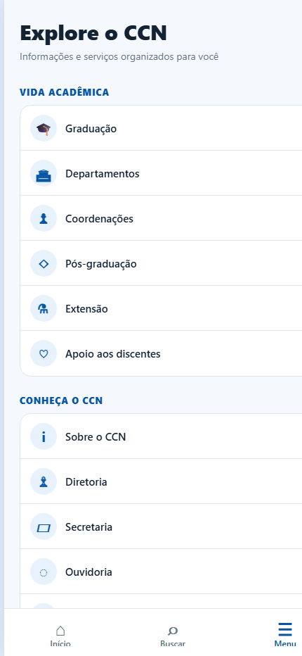
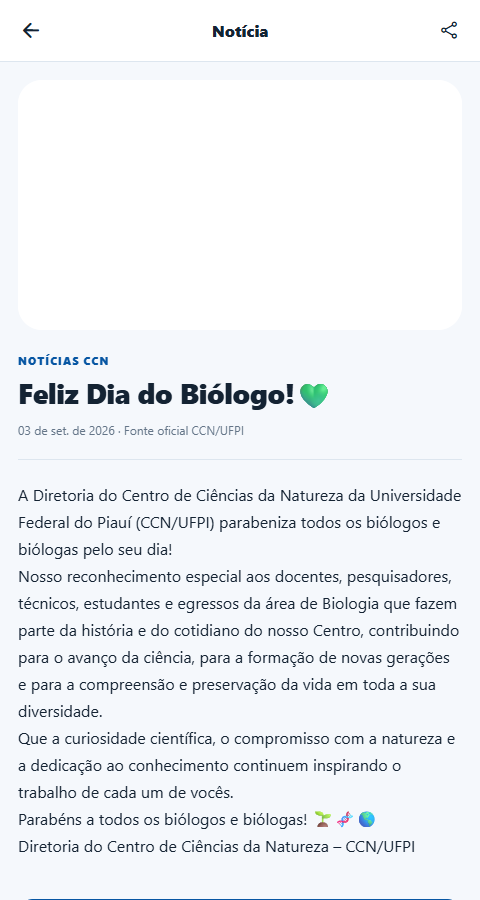

CCN
Mobile
O Centro de Ciências da Natureza na palma da mão: notícias, documentos, busca e serviços em uma experiência mobile-first.
01Informação oficial sem fricção.
Uma proposta para concentrar os principais pontos de contato do CCN em um aplicativo acessível, rápido e preparado para Android, iOS e web.
Abrir projeto funcionandoProjeto demonstrativo. Esta apresentação não representa um aplicativo oficial publicado pela Universidade Federal do Piauí.
DEMONSTRAÇÃO INTERATIVA
Abrir em tela cheia ↗Teste o aplicativo agora.
Navegue pelas telas, pesquise conteúdos e abra os serviços integrados.


